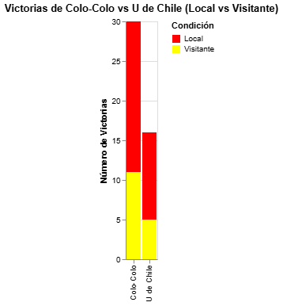
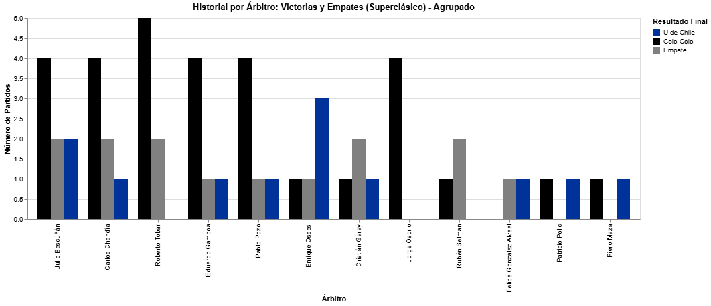
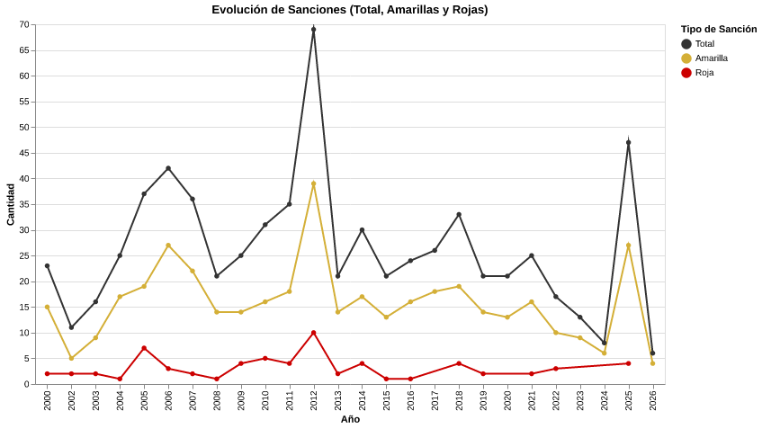
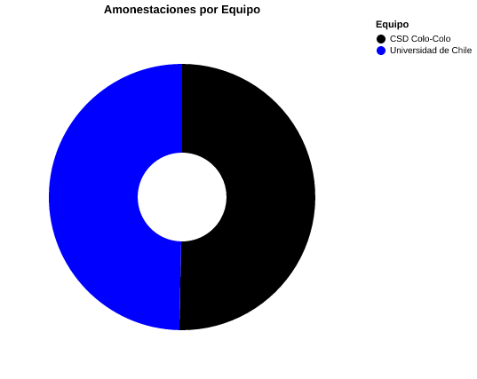
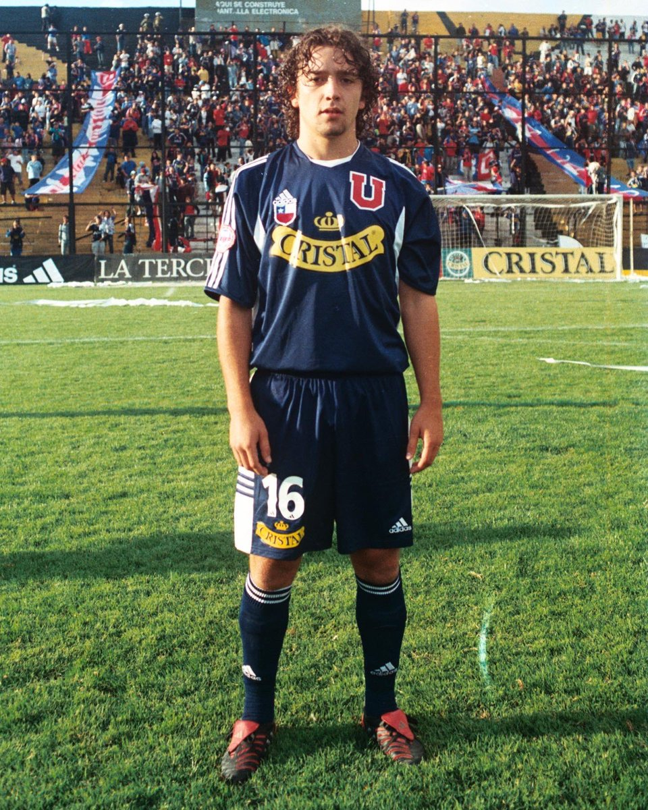

Un clásico no es un partido cualquiera, para muchos es el partido más importante del año, en donde no se levanta una copa o se borda una estrella, sino que es el honor el que se pone en juego. En Chile, el clásico más importante del país es solamente uno y no hay discusión: Colo Colo contra la Universidad de Chile.
Por esto, podríamos definir este partido con la palabra intensidad, en donde no importa cuál de los dos venga en mejores condiciones o cuál juega mejor, aquí las tácticas quedan de lado y se juega con el corazón. Por ello, en estos encuentros es común ver que hay una gran cantidad de faltas y el ambiente es agresivo. ¿Qué tanto ha cambiado eso con el tiempo?
Durante el siglo XXI se han disputado 63 partidos oficiales entre Universidad de Chile y Colo-Colo. La ventaja histórica favorece ampliamente al conjunto albo, con 30 victorias, 17 empates y solo 16 triunfos azules. Esta supremacía se convierte a menudo en el detonante emocional que transforma la táctica en agresión pura.
El Estadio Nacional ha sido el principal coliseo de estas batallas (30 encuentros). En la cancha, el arbitraje también juega su rol: Julio Bascuñán lidera con 8 apariciones, seguido por Roberto Tobar y Carlos Chandía con 7.


Los números no mienten. Al observar la evolución de las sanciones desde el año 2000, la gráfica revela la brutal anomalía de 2012 y cómo el 2025 resucitó la agresividad con un repunte escalofriante.

Uno de los árbitros que llama la atención del gráfico anterior es Enrique Osses. Sus 5 encuentros dirigiendo dejaron de todo, por lo que es importante repasar un poco su rendimiento.
Un empate 1-1 trabado. Tras el gol del empate de Colo-Colo, Jorge Valdivia fue a gritarle el gol en la cara al arquero azul Johnny Herrera.
Ante la monumental gresca, Osses cortó por lo sano y expulsó a 5 jugadores (Herrera, Valdivia, Ponce, Villarroel y Pinto). Cimentó su fama drástica.
Semifinal de vuelta del Torneo de Clausura. El ambiente venía calientísimo desde la ida.
Tras expulsar a Rafael Olarra en la U, los ánimos estallaron y llovieron objetos. Osses no dudó y suspendió el partido a los 67 minutos.
Un clásico mucho más táctico donde la U se impuso. De los pocos partidos donde Osses pasó desapercibido, manejando el juego brusco con amarillas tempranas.
La U de Jorge Sampaoli ya empezaba a mostrar su intensidad arrolladora. Lo dio vuelta agónicamente 2-1. Osses manejó con personalidad los reclamos albos por la intensidad física.
Semifinal de vuelta. La U firmó una exhibición total de fútbol (4-0) en un Nacional inundado de azules.
Osses dirigió un partido de altísima tensión donde Colo-Colo se desesperó. Expulsó correctamente a Mauro Olivi y Gonzalo Fierro.
EL EQUILIBRIO DE LA VIOLENCIA: El mito dicta que un equipo reparte más golpes que el otro. Sin embargo, los datos son demoledores: la balanza de amonestaciones está prácticamente empatada en el siglo XXI. Ambos escudos pegan por igual.


PASAR EL MOUSE PARA VER EXPEDIENTE >>
PASAR EL MOUSE PARA VER EXPEDIENTE >>
PASAR EL MOUSE PARA VER EXPEDIENTE >>
PASAR EL MOUSE PARA VER EXPEDIENTE >>
Esta es la anatomía del año más violento. Por el formato de playoffs, se enfrentaron cuatro veces. La Universidad de Chile llegaba como el invicto campeón de la Copa Sudamericana, una máquina táctica. Por otro lado, Colo-Colo, con una sequía de títulos desde 2009 y plagado de dudas, apostó todo a la destrucción del juego rival.
Haz clic en los expedientes para revelar los datos:
Mientras el equipo local funcionaba a la perfección, el visitante recurrió a la fuerza desmedida, culminando con la expulsión de Mauro Olivi por doble amonestación.
De vuelta en el Nacional, la historia se repitió. El León goleó sin piedad, y los "indios" terminaron perdiendo los estribos por completo, resultando en dos expulsiones clave.
En el Monumental, la localía pesó. Colo-Colo logró imponerse en el marcador en un partido sumamente reñido, pero utilizando una estrategia basada casi por completo en detener el juego rival con infracciones violentas.
A pesar de la victoria alba, el encuentro terminó en una gresca monumental que involucró al arquero albo Francisco Prieto y a Johnny Herrera de la U, quienes vieron la roja tras el pitazo final.
Posterior a 2012, la agresividad fue a la baja año tras año (siendo el 2024 el segundo año más pacífico de la historia). Pero en 2025, el escenario mutó. Colo-Colo vivía un centenario para olvidar por su mal rendimiento, mientras que la U. de Chile peleaba por todo. La combinación de frustración y presión encendió nuevamente la pólvora.
El Contexto: Partido pospuesto por incidentes de Colo-Colo vs Fortaleza en Libertadores. Un encuentro tenso donde los 3 goles fueron vía penal.
Las Faltas: A diferencia de 2012, la fricción fue pareja: U (13 faltas, 4 amarillas) | CC (14 faltas, 3 amarillas).
ALERTA ROJA: Expulsión directa para Marcelo Díaz (U) y Esteban Pavez (CC) tras agredirse al final del encuentro.
El Contexto: "La Ruca" vibró cuando Vicente Pizarro anotó el gol de la victoria, cortando la mala racha alba en un partido altamente cortado.
Las Faltas: CC (12 faltas, 4 amarillas) | U (14 faltas, 3 amarillas).
ALERTA ROJA: La violenta expulsión de Franco Calderón (U) condicionó gran parte del desarrollo táctico.
El Contexto: Disputada en Santa Lucía tras severas polémicas por la falta de sedes y riesgo de las hinchadas. Victoria cómoda de una U avasalladora.
Las Faltas: U (16 faltas, 5 amarillas) | CC (14 faltas, 4 amarillas).
ALERTA ROJA: La temprana expulsión de Sebastián Vegas sepultó cualquier esperanza del equipo popular.
Interacciona con el gráfico para visualizar la diferencia abismal del volumen total de faltas cometidas por cada equipo en los dos años más tensos del siglo.